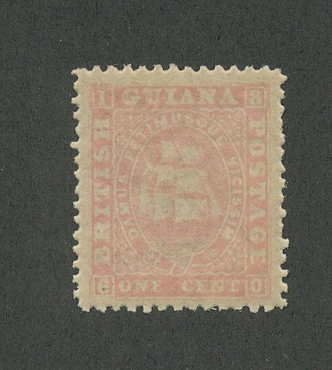
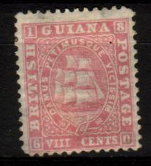
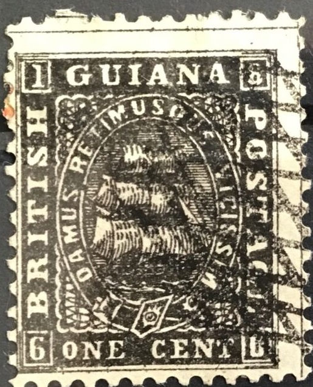
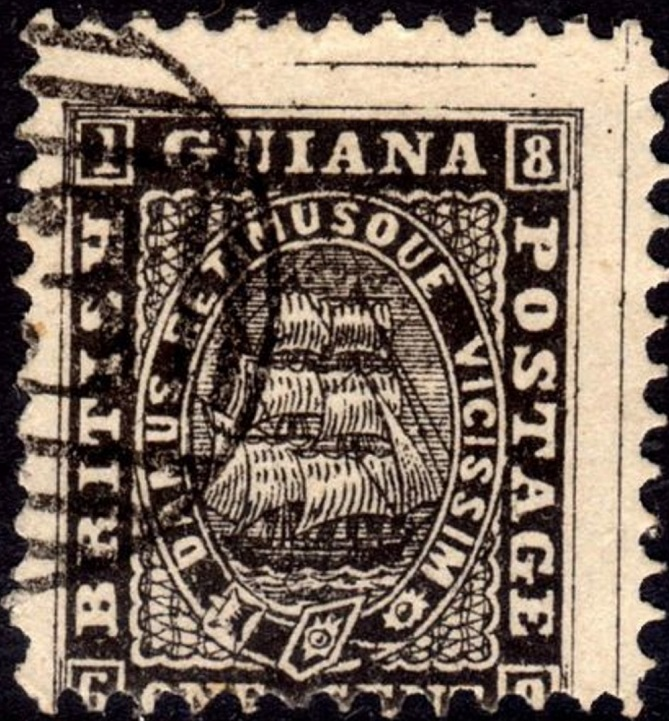
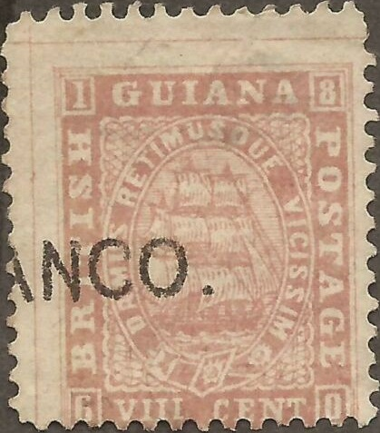
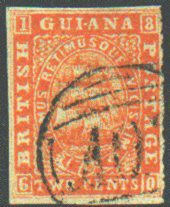
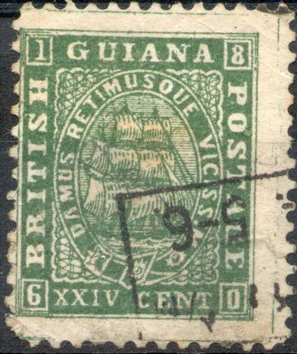
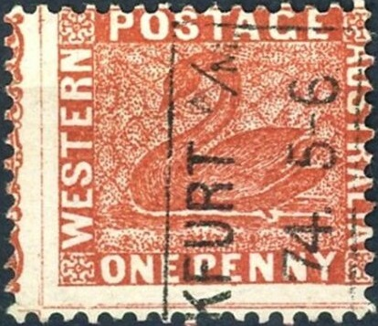
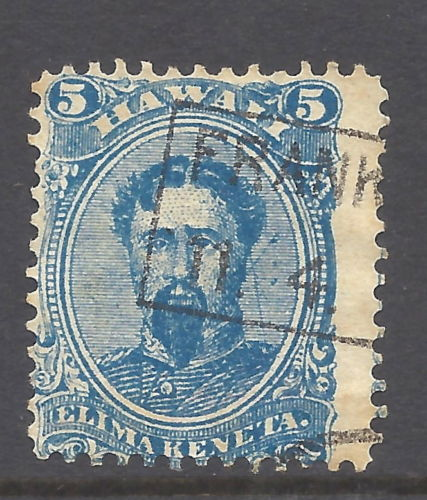

(Type I and Type II)
Return To Catalogue - Issues of 1850-1852 - Issues of 1853-1859 - Issues of 1853-1859 - Issue of 1862 - Issue of 1863 - Issues of 1876-1888 - Issues of 1889-1920
Note: on my website many of the
pictures can not be seen! They are of course present in the
catalogue;
contact me if you want to purchase it.

(Type I and Type II)
One cent red One cent brown One cent black Two cents orange Four cents blue

VIII (8) cents red XII (12) cents lilac XXIV (24) cents green
Two types exists of all these stamps, the difference is only in the lower lettering; type I: with more space between value and "CENTS", and type II: less space between value and "CENTS". These stamps are printed on thick and thin paper and exist with various perforations from 10 to 15.
Value of the stamps |
|||
vc = very common c = common * = not so common ** = uncommon |
*** = very uncommon R = rare RR = very rare RRR = extremely rare |
||
| Value | Unused | Used | Remarks |
| 1 c black | RR | R | Type I |
| 1 c black | *** | *** | Type II |
| 1 c red | RRR | RRR | Type I |
| 1 c brown | RRR | RR | Type I |
| 2 c | RR | R | Type I |
| 2 c | R | *** | Type II |
| 4 c | RRR | R | Type II |
| 8 c | RR | RR | Type I |
| 8 c | RR | R | Type II |
| 12 c | RRR | RR | Type I |
| 12 c | RR | R | Type II |
| 24 c | RRR | RR | Type I |
Official stamps, overprinted "OFFICIAL" (1875)
One cent black (red overprint) One cent black (red overprint and grey bar on 'OFFICIAL', 1878) Two cents orange VIII c red VIII c red (with 2 grey horiz. and 1 vert. bars on 'OFFICIAL', 1878) XII c lilac
The grey bar on the 1 c and VIII c was used to change the official stamps back into normal stamps again. This overprint also exist for the VI c blue (vert. and horiz. bar). All stamps are of type I (see above).
Value of the stamps |
|||
vc = very common c = common * = not so common ** = uncommon |
*** = very uncommon R = rare RR = very rare RRR = extremely rare |
||
| Value | Unused | Used | Remarks |
| 1 c black | R | R | |
| 1 c black | RR | RR | with grey bars |
| 2 c | RR | R | |
| 2 c | RRR | R | with grey bars |
| 8 c | RRR | RR | |
| 12 c | RRR | RRR | |
12 c with red '5 d' overprint. This stamp is mentioned in Album
Weeds. The Du Pont collection has a letter with this overprint.
It is stated there that this is an accountancy mark.
Forgeries, examples:
Very primitive forgeries
Other forgeries:
  
A giant grill cancel, a numeral "53" cancel and a "FRANCO." cancel which
appears on forgeries of other countries as well.


  
Note the German "FRANKFURT
A/M 11 4 74 5-6" cancel which I have also seen on a 1 p
Western Australia forgery and a Hawai forgery.
The above forgeries are described in 'The Spud Papers XIV', the easiest way to spot them is the wrongly spelt "PETIMISQUE", in these forgeries it is spelt "RETIMISOUE" (with an "R"). Note that the "Q" of the genuine stamps is very badly drawn and looks like an "O".
Forgeries with the correct inscription "PETIMUSQUE".
In my opinion, the "T" of "POSTAGE" should be
aligned with the second "I" of "VICISSIM". In
the above forgeries this "I" is clearly placed lower.
Also note the strange "S" in "CENTS". The 4 c
also exists of this particular forgery.
Forgery of the 1 c value
Forgery which shows sometimes guidelines. The "0" in
the right hand bottom corner is badly done. They exist with
forged "A03" cancel. Is this the third forgery of Album
Weeds?
Another forgery of the 1 c black and 1 c red value. The
background behind the ship is clearly different from a genuine
stamp. Also note the scratches below the "N" and
"T" of "CENT".
Another forgery of the 12 c value.
Forgery of the 1 c red with very badly done "8" in the
upper right corner.
Very blur 1 c with French overprint in blue: "CARTES PORTANT
LA GARANTIE CONTIENNENT...".
Black 24 c forgery.
{kind=link}
{kind=link}
{kind=link}
{kind=link}
{kind=link}
{kind=link}
{kind=link}